In China Employee Termination: Pulse Checklist-Ladder Brief for Foreign Employers (2026 Hourly Run)
Key takeaways
- China termination outcomes improve when teams treat compliance as a maturity ladder, not a one-time legal memo.
- Foreign employers usually underperform at Level 2: cross-functional coherence between legal, HR, and payroll.
- The fastest way to reduce dispute exposure is to promote every case to “dispute-ready” evidence and settlement discipline before release.
- Payroll settlement and IIT handling are part of the legal control perimeter.
- Legal depth should support frontline execution decisions, not replace them.
Pulse opener: why this format matters now
For foreign operators, the practical problem in China termination work is rarely “no policy exists.” The real issue is uneven control maturity. One team runs a solid legal check, another uses generic communication, and payroll receives assumptions late. Cases still move forward, but risk compounds quietly. By the time an employee challenge appears, the organization discovers that each function thought it was compliant while the overall case file was inconsistent.
This run uses a checklist-ladder format to solve that gap. It gives leaders and operators a shared maturity model with concrete gates: Level 1 baseline compliance, Level 2 controlled execution, Level 3 dispute-ready posture. The legal appendix remains available, but the lead narrative stays concise and action-oriented for non-China specialists.
Plain-language legal context first
In China, termination is generally a route-based legal action under labor law and related implementation rules, not an at-will management choice. Employers are expected to select a lawful path and execute that path consistently. In practice, dispute outcomes are strongly affected by whether route rationale, evidence records, communication documents, and payroll settlement files tell the same story.
For foreign clients, the plain-language rule is: lawful route + coherent evidence + aligned execution. If one leg is weak, the case should not be treated as release-ready.
The checklist ladder: three maturity levels
Level 1 — Baseline legal posture (minimum threshold)
At Level 1, the company has identified a plausible legal route and basic required documents, but controls are still fragile. Teams can describe why they are acting, but cross-functional alignment is mostly manual and timing-sensitive.
Checklist (Level 1):
- Route memo exists with initial legal rationale.
- Core case facts are collected in one folder.
- HR has a draft communication path.
- Payroll is aware a case is pending.
Primary risk at this level: narrative drift and late-stage rework.
Level 2 — Controlled execution posture (operationally stable)
Level 2 is where most foreign employers should operate by default. Legal, HR, and payroll use a single case packet and common assumptions. Controls are explicit enough to prevent routine contradiction.
Checklist (Level 2):
- Route memo includes confidence level and non-negotiable assumptions.
- Evidence index maps each key fact to an owner and source.
- HR communications are aligned to approved legal wording.
- Payroll settlement assumptions are validated before release.
- Escalation triggers are defined for missing evidence or unresolved uncertainty.
Primary risk at this level: local nuance can still be under-modeled if city-specific uncertainty is not captured.
Level 3 — Dispute-ready posture (defensibility optimized)
Level 3 is appropriate for higher exposure cases or organizations seeking tighter governance. The focus is reproducibility and retrieval quality under pressure.
Checklist (Level 3):
- Full chronology and approval logs are timestamped and immutable.
- Coherence gate pass is documented before employee communication.
- Settlement and tax treatment logic are approved in writing.
- Archive retrieval test passes before case closure.
- Post-case review captures exception themes and preventive actions.
Primary advantage at this level: lower variance in dispute response quality and stronger leadership visibility.
What this means for foreign operators immediately
The ladder helps international teams diagnose where they are failing without legal overcomplication. If your team is stuck at Level 1, do not solve it by adding more template language; solve it by improving alignment controls. If you are mostly at Level 2 but still seeing escalations, the likely gap is local uncertainty management or archive quality. If you are managing higher-risk cases, moving targeted files to Level 3 can materially reduce reactive settlement pressure.
Leadership should ask one recurring question: “How many active cases are release-ready at Level 2 or above, and why are the rest below threshold?” This framing turns compliance into measurable operations quality.
Operations module
A) SOP by role ownership
Legal: define route, confidence, and prohibited downstream deviations. Approve final narrative basis.
HR: maintain chronology, approvals, communication sequence, and manager script discipline.
Payroll: confirm final pay components, IIT assumptions, social insurance handling, and run timing controls.
Manager: execute only approved communication boundaries and avoid informal commitments.
Vendor/EOR: preserve handoff integrity with visible status fields and unresolved issue tracking.
B) Document checklist and practical cutoffs
Required release set:
- Route memo + confidence marker
- Evidence index with ownership tags
- Approval log (who/when/conditions)
- Employee communication set
- Settlement worksheet + tax notes
- Archive map + retrieval owner
Suggested cutoffs:
- Pre-release: route and evidence complete.
- Alignment gate: legal-HR-payroll coherence pass.
- Release: only cases without critical unresolved controls.
- Post-release (internal SLA): retrieval verification and closure note.
C) Exception ladder (escalation intensity)
Tier 1 (repairable): minor non-critical documentation gap → assign owner/date and continue with hold condition.
Tier 2 (material): evidence conflict or payroll/legal assumption mismatch → freeze release and joint review required.
Tier 3 (critical): unresolved local uncertainty with material exposure or communication variance already issued → executive escalation and explicit risk acceptance required.
This ladder prevents hidden exceptions from becoming silent approvals.
D) System controls and audit fields
Minimum required fields for reliable control:
route_typeroute_confidenceevidence_integritycoherence_gatesettlement_readinesslocal_uncertainty_flagarchive_retrieval_status
Control design recommendations:
- Block workflow progression when any mandatory field is blank.
- Keep immutable timestamps for key approvals.
- Review monthly trendline of exception tiers and remediation cycle time.
Common errors and how to prevent them
Error 1: thinking legal review alone equals readiness
Prevention: require cross-functional coherence gate before release.
Error 2: treating payroll as an end-stage admin task
Prevention: include payroll at assumption stage, not after communication drafting.
Error 3: suppressing local uncertainty to protect timeline
Prevention: force explicit uncertainty logs with owners and decision deadlines.
Error 4: over-relying on global templates
Prevention: require case-level evidence mapping and local-fit checks.
Error 5: closing files without retrieval tests
Prevention: block closure unless first-pass retrieval succeeds.
What to watch next
Foreign employers should keep monitoring city-level implementation differences and evidentiary expectations, especially when scaling operations across multiple China locations. They should also track whether internal governance can demonstrate process quality under audit pressure, not only policy intent. In practical terms, the organizations that operationalize Level 2+ controls consistently will likely see fewer emergency escalations and more predictable outcomes.
FAQ
Do all cases need Level 3 controls?
Not always. Level 2 should be default for routine reliability, while Level 3 is advisable for higher-risk or high-visibility cases.
Why is this called a “ladder”?
Because maturity should be progressive and measurable. Teams can see where they are and what to improve next.
Is this approach too heavy for fast-moving teams?
No. It is designed to reduce rework by introducing a few mandatory gates that prevent costly contradictions.
Where do foreign HQ teams usually fail first?
Most often at coherence: legal, HR, and payroll each do reasonable work but without one synchronized case narrative.
What KPI should leadership prioritize?
Percentage of active cases meeting Level 2+ readiness before release, plus recurrence of Tier 2/3 exceptions.
Does this replace local legal advice?
No. It complements legal advice by improving operational execution quality.
Legal appendix (secondary depth)
1) Core legal anchors
The PRC Labor Contract Law and implementation regulations provide the statutory base for employer termination logic. Supreme People's Court interpretations are relevant for dispute-application and evidence treatment context.
2) Practitioner and business synthesis
Practitioner sources highlight that cross-functional inconsistency and weak documentation are recurring failure drivers for foreign employers. Business/payroll references reinforce the importance of settlement and tax treatment controls.
3) Residual interpretation risk
City-level practice and tribunal tendencies can vary. For material cases, localized legal and payroll advice remains essential.
Source-fit note for this run
This run maintained the required source mix and rotated structure to a checklist-ladder model. Duplicate narrative elements from prior matrix/myth/case formats were removed, with stronger focus on measurable control maturity for foreign operators.
Disclaimer
This content is for informational purposes only and does not constitute legal, tax, payroll, accounting, or compliance advice. Employers should obtain qualified local professional advice for specific cases.
Sources
- National People's Congress. Labor Contract Law of the PRC (English text). Accessed 2026-02-28: http://www.npc.gov.cn/zgrdw/englishnpc/Law/2007-12/13/content_1384064.htm
- State Council. Implementation Regulations of the Labor Contract Law (Decree No. 535). Accessed 2026-02-28: https://www.gov.cn/gongbao/content/2008/content_1124615.htm
- Supreme People's Court. Interpretation (I) on Application of Labor Dispute Law. Accessed 2026-02-28: https://www.court.gov.cn/fabu/xiangqing/243981.html
- China Briefing. Employee Termination in China. Updated 2025-10-17, accessed 2026-02-28: https://www.china-briefing.com/news/employee-termination-in-china/
- Littler. Key Recent Developments in China's Employment Law. Published 2024-03-20, accessed 2026-02-28: https://www.littler.com/news-analysis/asap/key-recent-developments-chinas-employment-law-china-us-comparative-perspective
- PwC. PRC Individual Taxes on Personal Income (Tax Summaries). Accessed 2026-02-28: https://taxsummaries.pwc.com/peoples-republic-of-china/individual/taxes-on-personal-income
Need local employment support in China?
If you need a compliance-first partner for hiring, payroll, and risk controls in China, China-Payroll.com can help evaluate the right setup.
Image Prompt Pack
Create a 16:9 hero image for article title: 'In China Employee Termination: Pulse Checklist-Ladder Brief for Foreign Employers (2026 Hourly Run)'. Scene: global operations team evaluating workforce model options for China market entry. Include motifs: decision…